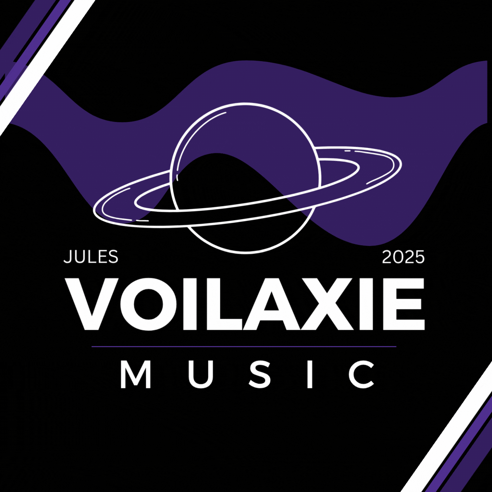

Bot musical Discord
Voilaxie Music

- Archivé
- 2025
- Environ 284 serveurs
Contexte
[À COMPLÉTER : pourquoi j’ai lancé ce projet.]
Ce que j’ai fait
J’ai personnalisé, déployé et exploité un bot musical open source (licence GPL-3.0, base créée par saxho-tv).
[À COMPLÉTER : mes modifications précises.]
Le bot lit Spotify, YouTube, Deezer, Apple Music, SoundCloud et des radios en ligne.
- Mode 24/7, filtres audio et égaliseur.
- Suggestions en lecture automatique et playlists personnalisées.
- Rôle DJ et salon dédié aux demandes musicales.
- Boutons de contrôle intégrés au message du lecteur.
Il compte environ 58 commandes et est disponible en plusieurs langues.